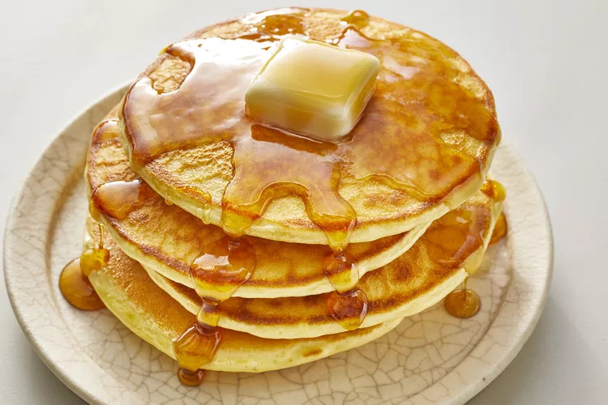

Good Old Fashioned Pancakes

This pancake recipe promises to deliver perfect pancakes that are surprisingly easy to make. The result is a stack of thick, fluffy, and incredibly delicious pancakes. With just a few basic ingredients, likely already available in your kitchen, this recipe surpasses the quality of boxed pancake mixes, offering a homemade and delightful breakfast experience.
Ingredients
- 1 ½ cups all-purpose flour
- 3 ½ teaspoons baking powder
- 1 tablespoon white sugar
- ¼ teaspoon salt, or more to taste
- 1 ¼ cups milk
- 3 tablespoons butter, melted
- 1 egg
Directions
- Sift flour, baking powder, sugar, and salt together in a large bowl. Make a well in the center and add milk, melted butter, and egg; mix until smooth.
- Heat a lightly oiled griddle or pan over medium-high heat. Pour or scoop the batter onto the griddle, using approximately 1/4 cup for each pancake; cook until bubbles form and the edges are dry, about 2 to 3 minutes. Flip and cook until browned on the other side. Repeat with remaining batter.